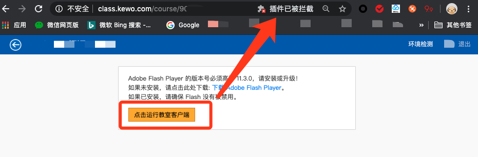

环境配置¶
直播平台运行环境系统包括Windows/Mac两个平台，需要安装相关浏览器及Adobe Flash Player插件。
IOS及安卓平台可以使用“课窝直播”App。
软件安装指南¶
以下主要介绍浏览器及相关软件安装步骤及注意事项。
浏览器安装¶
常用的浏览器有Firefox、Chrome、Edge、Safari等浏览器，推荐安装 Firefox 及 Chrome 两款浏览器。
注解
Firefox及Chrome浏览器比较稳定方便；
Firefox浏览器对于Flash限制较少，默认开启；
Chrome浏览器默认禁用Flash,需要开启操作。
Firefox浏览器¶
- 下载地址
- Mac 平台
下载软件安装包；
安装软件；
双击下载安装包；
打开安装包后会出现 安装界面 如下图：
根据提示，将“firefox”图标拖拽至 Application 文件夹进行安装。
如果没有出现安装界面，可以打开桌面，找到刚刚解压的安装盘，然后双击打开：

运行软件；


{kind=link}
Chrome浏览器¶
- 下载地址
- Mac 平台
下载软件安装包；
安装软件；
双击下载安装包；

打开安装包后会出现 安装界面 如下图：

根据提示，将“chrome”图标拖拽至 Application 文件夹进行安装。

如果没有出现安装界面，可以打开桌面，找到刚刚解压的安装盘，然后双击打开：

运行软件；
{kind=link}
Flash安装¶
直播平台的课程教室依赖于Adobe Flash Player插件运行。
注解
Firefox浏览器对于Flash限制较少，默认开启；
Chrome浏览器默认禁用Flash,需要开启操作。
- 下载地址
- Mac 平台
下载软件安装包；
安装软件；
{kind=link}
{kind=link}
{kind=link}
{kind=link}
{kind=link}
Teamviewer¶
Teamviewer远程软件可以很好的方便设备调试，该软件可以选择性安装。
注解
远程软件可以很好的方便技术人员远程调试设备
- 下载地址
- Mac 平台
下载软件安装包；
安装软件；
运行软件；
将 如图所示“ID””密码”，发送给技术人员即可。
{kind=link}
{kind=link}
{kind=link}
向日葵¶
向日葵远程软件可以很好的方便设备调试，该软件可以选择性安装。
注解
远程软件可以很好的方便技术人员远程调试设备
- 下载地址
- Mac 平台
下载软件安装包；
安装软件；
运行软件；
将 如图所示“ID”，发送给技术人员即可。
{kind=link}
环境测试¶
在将相关软件安装好之后，打开浏览器，地址栏输入 课窝直播地址（class.kewo.com）,然后进行登录。

- 环境测试
平台登录之后，在界面右上角有“环境测试”按钮，主要用来检测flah及外放、麦克风是否可用。
点击“环境测试” chrome://settings/content/flash
进入环境检测界面，需要先接好外放及耳麦，然后点击开始
进入环境测试界面，点击允许，然后播放，测试麦克风等
部分浏览器会出现 flahs崩溃、按钮点击无效果等情况，一般是浏览器阻拦了flash,需要点击开启。
如图，点击地址栏右侧图标查看
点击图标，会出现一个flash提醒，然乎点击“管理”
如果没有出现弹框，可以打开新标签页，然后在地址栏输入:
chrome://settings/content/flash
进入浏览器Flash配置界面：
选择允许，然后切换至 课程界面，刷新当前页面。
注解
部分浏览器会直接阻断Flash插件，根据上述方式设置后，需要重新刷新页面或者重启浏览器；
个别浏览器或者网络下，环境测试在测试网络情况的时候会卡住，这并不妨碍上课，直接关掉当前页面，进入课堂即可。
浏览器Flash配置¶
Chrome浏览器及基于Chromium的浏览器会默认禁用掉Flash插件，所以需要提前配置一下。
- 问题复现
部分使用Flash的网站在请求Flash权限的时候会有如下提示,当你点击 “flash”图标，或者自定义的Flash启动按钮的时候 在地址栏或弹出一个插件被阻止的提示，第一次会直接扩展提示，后边再次点击只会显示提示ICON,很不容易被发觉。
- 配置方式1
在地址栏有这种提示的时候，点击地址栏右侧的插件ICON，会弹出插件配置的flash弹框，然后点击 “管理“ 按钮，进入FLah管理界面。
如果没有显示该ICON, 可以在地址栏直接输入 chrome://settings/content/flash 进入
在Flash管理界面，将“禁止网站运行Flash”，改为“先询问”
然后切换回之前的页面，刷新下页面，然后再点击启动Flash按钮，会在左上角提示 “是否运行FLash”，选择允许
如果没有提示，请重启浏览器，然后在点击相关按钮。
- 配置方式2
部分版本浏览器可以直接在地址栏针对当前域名进行设置，如果没有如下图提示，请参考“配置方式1”进行设置
点击地址栏左侧的“小锁🔒”
然后将 flash、摄像头、麦克风 等配置项都设置为允许
设置之后浏览器会提示“重新加载”，点击加载即可